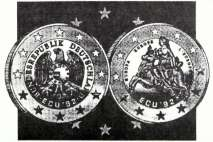

“Jésus-Christ est le même hier, aujourd’hui, et éternellement” (Hébreux 13.8).
LETTRE CIRCULAIRE N° 37
JANVIER 1991
Je vous salue de tout coeur dans le précieux Nom de notre Seigneur Jésus-Christ par la parole d’Esaïe 61.2; Luc 4.19:
“ pour publier l’an agréable du Seigneur”.
Tous les lecteurs de la Bible savent ce que signifie cette année agréable au Seigneur. Elle se rapporte au Jubilé qui avait lieu après sept fois sept ans, c’est-à-dire la cinquantième année. Lors d’une telle année du Seigneur, toutes les personnes endettées étaient libérées de leurs dettes. Depuis que le Seigneur l’a proclamée voici bientôt deux mille ans pour la période du Nouveau Testament chaque année est pour beaucoup de croyants un Jubilé. Les croyants, pour la plupart, savent en quelle année ils ont fait l’expérience de leur conversion. C’est volontiers qu’ils s’en souviennent. Pour eux elle demeure l’année toute spéciale où ils ont reçu la rémission de leur dette. Grâce au glorieux Jour de la réconciliation, à Golgotha, ceux qui ont cru en l’oeuvre d’expiation parfaitement achevée sont sortis pleinement libres.
L’année qui vient de s’écouler a été également pour beaucoup de gens une sorte d’année du Jubilé. Si le temps dure encore, l’année qui vient sera aussi pour beaucoup de personnes une année agréable au Seigneur. L’Evangile valable éternellement retentit jusqu’aux confins de la terre comme l’appel d’une trompette. Arrivés à la fin de l’année qui vient de s’achever, nous avons sans cesse entendu dire du temps, qu’il n’a jamais passé aussi rapidement. Au seuil de 1990-1991 les aiguillages ont déjà été placés pour l’avenir, du moins en ce qui concerne l’Europe Unie, laquelle à la fin de 1992 constituera réellement avec ses 340 millions d’habitants une puissance mondiale. On nous demande sans cesse pourquoi les frontières ne sont tombées qu’en ce temps-ci et non plus tôt? Pourquoi les efforts d’unification sont devenus actuellement l’objectif principal des peuples de l’Europe, et non plus tôt?
Dans notre siècle ont eu lieu de remarquables événements, que ceux des anciennes générations ont en partie vécus: deux guerres mondiales et la plus cruelle extermination (à jamais incompréhensible) de millions de Juifs. Après la deuxième guerre mondiale a commencé la phase de la guerre froide. Il s’ensuit le réarmement de deux blocs militaires. Et voici que subitement, presque en une nuit, tout a été changé: l’armement a fait place au désarmement, les systèmes d’armements les plus meurtriers sont mis à la ferraille et on ne tend plus qu’à un seul but: arriver à la paix et à la sécurité et bâtir la maison Européenne dans laquelle tous les peuples et nations auront leur place.
Nous pourrions poser la question des disciples au Seigneur: “Est-ce en ce temps-ci que tu rétablis Ton royaume?”. Le temps des nations arrive à sa fin et le temps pour Israël commence à poindre. Toutes les interprétations spiritualisées disant que l’Eglise de la Nouvelle Alliance a été mise à la place du peuple de Dieu, c’est à dire d’Israël, sont dépourvues de tout fondement biblique. L’Eglise des nations peut être prise dans le sens de l’Israël spirituel lorsque le croyant a expérimenté une réelle circoncision au moyen de la Parole de Dieu agissant dans son coeur par le Saint-Esprit, et qu’un renouvellement et une nouvelle naissance ont été manifestés par la grâce de Dieu. Il y a également dans notre génération des gens qui ont été changés, comme Jacob le fut en Israël, de trompeurs en combattants avec Dieu. Toute personne qui s’attend à la transmutation de son corps lors du retour de Jésus-Christ doit avoir fait l’expérience d’un tel changement dans son coeur afin d’être devenu un combattant avec Dieu, un porteur de la victoire de Jésus-Christ. La circoncision du coeur a lieu par la foi, grâce à la puissante action de la Parole de Dieu. Laquelle est plus tranchante qu’une épée quelconque à deux tranchants.
Le Seigneur Dieu avait de Son côté établi l’Alliance avec Abraham et tout Israël et Il avait exigé comme Sceau pour la justification de leur foi qu’ils passent par la douloureuse circoncision accomplie dans la chair de leur corps. Le peuple d’Israël demeure toujours, en tant que peuple d’Israël, le peuple de l’Eternel. Le même Eternel a établi une alliance avec l’Eglise du Nouveau Testament, et Il exige la circoncision et le renouvellement du coeur. C’est ainsi seulement que nous recevons alors la confirmation par le scellement du Saint-Esprit que cette oeuvre de la grâce de Dieu a eu lieu en nous. La condamnation est venue par la loi, parce que nous l’avions transgressée en y désobéissant. L’origine du péché se trouve dans l’incrédulité — c’est la révolte contre Dieu — et cela nous conduit à transgresser les commandements et les prescriptions donnés par Dieu. Puisque cette transgression avait eu lieu dans la chair, et que dans ce corps nous étions séparés de Dieu et étions à la merci de la mort, il fallut que le Sauveur vienne dans la chair afin d’enlever cette séparation par le moyen d’une expiation et que nous soyons réconciliés avec Dieu. Il a en même temps vaincu la mort et est ressuscité le troisième Jour. Sa victoire est aussi notre victoire.
MISE EN PLACE DES AIGUILLAGES
En ce temps mouvementé, beaucoup de choses arrivent aussi bien en ce qui concerne la religion que la politique. Le train de l’Europe circule à travers les pays et s’arrête à toutes les gares nationales principales; tous les politiciens doivent y monter et poursuivre le voyage avec les autres. Et celui qui s’y trouve déjà et voit où conduit ce train ose, comme le fit la “Dame de fer”, sauter de ce train en marche. Cependant quelqu’un d’autre prend aussitôt sa place et tout continue dans ce sens. Aujourd’hui celui qui n’est pas d’accord avec l’ensemble des événements concernant les temps de la fin, tels qu’ils nous sont décrits dans la Parole prophétique, doit être remplacé. Le temps presse, parce qu’il est court, et “l’Europe des patries” doit fonctionner à bref délai. Ce sera un empire catholique au sein duquel toutes les autres églises devront s’incliner devant l’église mondiale catholique romaine. Les droits propres à chaque nation seront en partie abandonnés et chacune d’elles soumettra sa propre puissance à ce dernier empire, ayant une fonction supérieure, comme cela est écrit et annoncé à l’avance dans la Parole de Dieu (Apoc. 17.17).
Comme cela est déjà fort bien connu, il n’y a pas que les drapeaux des différentes nations, mais l’on voit déjà flotter presque partout aussi celui de l’Europe. Les bus en sont décorés et les avions portent sur leur fuselage le drapeau bleu aux douze étoiles. Partout on voit ce dernier: sur les feuilles volantes, même lors d’occasions de fêtes nationales; et même on s’est servi de lui jusque dans la campagne électorale en Allemagne. En plus de cela il y a la valeur monétaire de l’Europe, l’écu (European Currency Unit). L’écu “92” est une pièce de monnaie à deux faces, comme c’est habituellement le cas. Sur l’une des faces, laquelle nous intéresse plus particulièrement, on y voit une femme chevauchant une bête et le tout environné de douze étoiles. L’image de la femme assise sur le taureau vient de la mythologie grecque; ce qui est nouveau, ce sont les douze étoiles qui l’environnent Qu’avaient donc en vue les dessinateurs lorsqu’ils ont fait cette ébauche? Serait-ce une Marie couronnée comme reine du ciel? Cela, c’est une autre affaire quand on voit combien le prince de ce monde est raffiné, et comment il est capable de produire un mélange assez élégant.
 Déjà aux jours d’Adam, puis au temps de Jésus et jusqu’aujourd’hui, l’adversaire se sert des passages de l’Ecriture qui conviennent à sa manière de voir, mais de cette façon ils se trouvent être retirés du contexte divin, afin qu’ils puissent servir à son propre but. En fait, nous voici à l’heure de la grande séduction qui devait venir sur la face de la terre entière.
Mais en même temps c’est aussi l’heure de la Vérité éclatante dans laquelle la Parole de Dieu, par révélation, brillera dans Son entièreté comme jamais auparavant. Il n’y a en effet qu’un seul passage dans toute la Bible où il soit question d’une femme portant une couronne de douze étoiles. Et cela se trouve dans Apocalypse 12. Mais la femme d’Apocalypse 12 ne chevauche nullement une bête, comme cela est dit de la femme d’Apocalypse 17, qui, elle, est qualifiée de prostituée. La bête sur laquelle elle était assise était pleine de noms de blasphèmes et sur cette femme était écrit un nom “Mystère, Babylone la grande, la mère des prostituées et des abominations de la terre” (Apoc. 17.5).
Les constructeurs de l’Europe catholique-romaine se sont eux-mêmes trahis. Ils ont mélangé Apocalypse 12 avec Apocalypse 17 et ont ainsi représenté une chose qui, proprement dit, n’existe pas du tout. C’est à présent le temps de l’union pour tous et dans tous les domaines, en tout pays. Une séduction magistrale est offerte aux masses comme falsification et comme offre de l’heure. Pour ce qui concerne le symbole de la femme tel qu’il nous est présenté dans Apocalypse 12, remarquez qu’il ne s’agit réellement pas de l’église universelle. Le chiffre 12 ne se rapporte qu’à Israël et à l’Eglise de Christ. Dieu a commencé Israël avec les douze tribus et c’est ainsi qu’Il a fondé l’Assemblée de l’Ancien Testament; Il fit avec les douze apôtres un nouveau commencement et fonda l’Assemblée du Nouveau Testament sur le sol juif. Le chiffre 12 nous est donné eu rapport avec Israël et également avec les douze apôtres dans la description de la Cité de Dieu d’Apocalypse 21.12-14: “… et aux portes douze anges, et des noms écrits sur elles, qui sont ceux des douze tribus des fils d’Israël et la muraille de la cité avait douze fondements, et sur eux les douze noms des apôtres de l’Agneau”. Abraham était déjà à la recherche de cette cité (Héb. 11.10), dans laquelle les justes de l’Ancien comme du Nouveau Testament arrivés à la perfection ont leur demeure.
Apocalypse 12 et 17 n’ont rien de commun. Le chapitre 12 nous montre symboliquement l’Eglise édifiée par Dieu Lui-même sur le sol juif, et qui est couronnée par la doctrine des douze apôtres. Apocalypse 17 présente à nos yeux l’église universelle qui commet fornication avec les rois de la terre et partage avec eux la puissance. Le temps dans lequel nous vivons est extrêmement séducteur car il est semblable aux jours de Noé où, sous le couvert de la religion, un mélange avait pris naissance. En ce temps-là la lignée bénie de Seth, qui était désignée comme étant celle des enfants de Dieu, se mélangea avec la lignée meurtrière qui avait pris naissance avec Caïn. A cause de ce fait, l’Eternel Dieu prit la décision de détruire toute chair en donnant pour raison: “Mon Esprit ne continuera pas toujours avec l’homme puisque lui n’est que chair” (Gen. 6.3). En ce temps-là il y avait visiblement dans cette lignée bénie de Dieu des personnes qui avaient l’Esprit, mais qui s’était laissées entraîner avec les autres dans le mélange, de telle sorte qu’elles s’opposaient à Dieu, qu’elles abandonnaient leur indépendance et participaient aux actions du plus grand nombre.
La même chose arrive maintenant. Le plus grand des mélanges de tout les temps a lieu: celui des protestants et des catholiques, incrédules, des chrétiens et des antichrists. Vu dans ce sens cette nouvelle monnaie symbolise exactement ce vers quoi nous nous dirigeons, c’est-à-dire vers un mélange total. Si l’ont veut parler d’une façon générale il n’y a plus aucune vision spirituelle claire quant au développement religieux qui s’accomplit de nos jours. Tout est relié et entrelacé avec la politique et l’économie. Il n’y a généralement aucune séparation claire non plus entre ce qui est décrit dans Apocalypse 12 et ce qui est dit dans Apocalypse 17. Simplement tout est mélangé! Ceux qui étaient autrefois les plus opposés l’un à l’autre — le mouvement de Pentecôte et l’église catholique romaine — entretiennent maintenant les meilleures relations. A côté de tous les mouvements pentecôtistes protestants il y a aujourd’hui le mouvement pentecôtiste catholique. Depuis le concile de Vatican II (1962-1965) tout a changé dans le domaine religieux, même si individuellement on n’en est pas tellement conscient. Nous avons affaire à une transformation et à un ordre nouveau politique, religieux et économique. Tous ces domaines font partie de l’empire romain. Nous pouvons prendre sans autre le texte de Genèse 11.4 pour typifier les efforts qui sont entrepris aujourd’hui: “Allons, bâtissons-nous une ville, et une tour dont le sommet atteigne jusqu’aux cieux; et faisons-nous un nom…”. Cette ville qu’ils ont voulu construire est bien connue, et également la “tour du dôme de St. Pierre” qui montre le ciel. Cependant le seul Chemin qui conduit au Ciel, et par cela même au Père céleste, est notre Seigneur Jésus, le Christ promis du Dieu Vivant.
Néanmoins l’ordre donné par Jésus-Christ à Son Eglise subsiste: l’Evangile éternellement valable du Royaume sera porté dans le monde entier. En tant que croyants bibliques de Christ nous soupirons après le temps très proche où nous n’aurons plus seulement à faire connaître le développement politique et religieux tel qu’il a été annoncé dans les prophéties se rapportant au temps de la fin, mais qu’au contraire nous pourrons donner des nouvelles des actions de Dieu qui doivent encore s’accomplir pour le dénouement de cet âge. Les promesses données pour ce temps doivent tout autant s’accomplir que s’accomplit en général la Parole prophétique devant nos yeux. De même que maintenant nous pouvons voir le développement dans son ensemble, puisse ainsi cette image changer afin que le monde entier puisse regarder ce qui se passe dans l’Eglise du Dieu Vivant, et au travers d’Elle. Nous pouvons glorifier la grâce de Dieu, car véritablement nos yeux spirituels n’ont été ouverts que par Sa grâce uniquement. Ce n’est que par grâce que nous avons perçu cet appel: “Sortez du milieu d’elle, mon peuple…” (Apoc. 18.4). Ce n’est que par grâce que nous reconnaissons le temps dans lequel nous vivons et le Message de cette heure. De même qu’Israël, sortant de tous les peuples, retourne dans son pays, ayant été dès le commencement mis à part de toutes les nations, ainsi actuellement le peuple du Seigneur retourne dans le pays des promesses divines pour ce temps, et c’est une Epouse mise à part de toutes les dénominations. Israël aurait dû être un peuple de rois et de sacrificateurs (Ex. 19.5,6); la même chose est dite de l’Eglise du Dieu Vivant du Nouveau Testament (1 Pier. 2.9,10). Si le peuple d’Israël se trouve déjà aussi engagé dans le pays promis, c’est parce que cela est nécessaire pour le choix des 144’000. L’Eglise, Elle aussi, est entrée sur le terrain des promesses divines pour ce temps et Elle prend sa position dans la foi. Nous croyons que Dieu veille sur toute Sa Parole afin de l’accomplir. Il conserve pour Lui la succession chronologique des événements reliés à l’histoire du salut, mais il est certain qu’Il ébranlera encore une fois les Cieux et la terre et fera une courte mais puissante oeuvre dans Son Eglise pour la gloire de Son Nom. Ce sera en fait la marche triomphale du Tout-puissant avec ceux des Siens qui L’auront cru et Lui auront fait confiance. Aussi certainement que Sa Parole s’est toujours accomplie, et que devant nos yeux s’accomplissent beaucoup de passages des Ecritures, ainsi, en tant qu’Eglise du Seigneur appelée à sortir de la confusion et des dénominations, nous pouvons entièrement nous confier en notre Dieu. Il achèvera dans un grand triomphe l’oeuvre qu’Il a commencée, en vue du Jour du retour de Jésus-Christ. Qu’à Lui seul aillent dès maintenant nos remerciements.
NOUVELLES MISSIONNAIRES
Nous sommes reconnaissants envers notre Dieu de ce qu’Il a fait tomber les différentes frontières et que les portes vers l’Europe de l’Est se sont ouvertes. A première vue il semble qu’il y ait maintenant là-bas plus de liberté religieuse que nous ne l’avons pratiquée ici. On a la permission de chanter et de prêcher dans les rues et sur les places, des rassemblements peuvent être organisés dans les centres culturels et partout dans les bâtiments publics. Nous avons pu aussi annoncer à l’avance ce développement en nous fondant sur la parole du Seigneur dans Matthieu 24.14: “Et cet évangile du royaume sera prêché dans la terre habitée tout entière, en témoignage à toutes les nations; et alors viendra la fin”. Cette parole est très claire et la succession des événements aussi. Premièrement il y a la prédication en témoignage à toutes les nations, et ensuite viendra la fin. D’autres portes s’ouvriront encore et le message du salut, par les moyens dont nous disposons maintenant, sera effectivement apporté une dernière fois à toutes les créatures de la terre.
Moi-même ai pu fort bien utiliser cette année et tenir des réunions dans un grand nombre de pays et de villes. Les rencontres où l’auditoire était le plus grand ont eu lieu en Roumanie. Dieu a employé d’une manière puissante notre bien-aimé frère Matthias et d’autres encore, de telle sorte que l’auditoire s’est élevé jusqu’à 3’000 personnes.
Dans d’autres pays de l’Est européen également nous avons trouvé partout portes et coeurs ouverts; ce dont nous sommes très reconnaissants au Seigneur. Avec ce travail la nécessité de prendre soin de publier les brochures dans les différentes langues s’est fortement accrue. Bien que nous sachions que la venue du Seigneur est proche, nous nous sommes décidés à construire encore, ici à Krefeld, sur le terrain de la Mission, une imprimerie avec bureaux et locaux d’expédition. Nous avons commencé les travaux au début de décembre, et nous espérons qu’en cinq ou six mois la mise en marche pourra avoir lieu. Conformément à la Parole, nous devons agir pendant qu’il fait jour, et c’est exactement ce que nous voulons faire. Il est aussi écrit dans Matthieu 24.46: “Bienheureux est cet esclave-là que son maître, lorsqu’il viendra, trouvera faisant ainsi”. Auparavant il est question que son maître l’avait établi sur les gens de sa maison pour leur donner la nourriture au temps propice. Mais après cela il est dit: “En vérité je vous dis qu’il l’établira sur tous ses biens” (v. 47). Notre tâche est celle de distribuer la Parole révélée comme étant la nourriture spirituelle, et nous pouvons témoigner, comme il est écrit ici, qu’il s’agit maintenant de la pleine révélation de la Parole et de ce que le Seigneur nous rassasie abondamment des biens de Sa maison.
J’ai un désir dans le coeur, celui de saisir cette occasion pour vous remercier tous sincèrement, vous qui soutenez fidèlement cette oeuvre missionnaire par vos prières, par vos dîmes et par vos offrandes. Comme je l’ai déjà dit souvent, chacun de ceux qui participent à cette oeuvre missionnaire, laquelle agit dans le monde entier et est suscitée par ordre de Dieu en accord avec les Saintes Ecritures, sera récompensé par le Tout-puissant. Dès le commencement nous avons expérimenté cela, et pas une fois nous n’avons présenté de programme ou réclamé de dons, ni joint de bulletins de versement aux brochures que nous envoyons. Jusqu’à maintenant le Seigneur Dieu a pourvu afin que les moyens nécessaires nous parviennent au moment voulu.
Nous souhaitons aux frères de Suisse les riches bénédictions pour leur travail missionnaire, de telle manière que sous peu, là aussi, soient fournis les moyens d’acquérir un centre pour l’Eglise. Dans cette perspective nous souhaitons de tout coeur à frère Alexis Barilier la bénédiction et le secours de Dieu pour prendre soin du Message de l’heure dans les pays francophones. De la même manière nous faisons mention devant le Seigneur de l’oeuvre missionnaire en Italie à la tête de laquelle se trouve notre bien-aimé frère Etienne Genton. Que là-bas aussi la bénédiction de Dieu puisse reposer d’une manière toute particulière sur ce qui sera fait. Pour tous les autres frères, dans tous les pays, nous souhaitons le secours de Dieu ainsi que Ses riches bénédictions, Sa sagesse et Sa grâce, afin qu’ils puissent faire toutes choses de la manière appropriée et au temps voulu pour l’honneur de Dieu.
Nous souhaitons à nous tous, pour cette année 1991, qu’elle soit une année semblable à un Jubilé, et qu’elle puisse nous amener, par grâce, à la rédemption et la guérison, à la libération de toute détresse de l’esprit, de l’âme et du corps. C’est certain, la foi vient de la prédication, et la prédication vient de la Parole de Dieu, et c’est ainsi que Dieu a pris Lui-même la responsabilité de confirmer Sa Parole envers ceux qui La croient. Il est fidèle et c’est Lui qui accomplira ce qu’Il a promis. Que tous donc parmi nous s’encouragent car le Seigneur est avec nous conformément à la promesse qu’Il a faite: “Et voici, moi je suis avec vous tous les jours, jusqu’à la consommation du siècle” (Mat. 28.20).
Que le Seigneur vous bénisse tous et soit avec vous tous.
Agissant de la part de Dieu.
Br. Frank